B / STEPPED TERRACESORIGINAL CONCEPT · NOT A FINAL RENDER
3 directionsFOUR VIEWS OF EACH
42.45 mPROPOSED HEIGHT
12 levelsINCLUDING GROUND
Day / DuskONE CONTINUOUS BUILDING
01 / Architectural direction
One site. Three possibilities.
A 72 × 50 metre conceptual site. A new building in every option. We recommend the stepped volume for its silhouette and its potential for light.
OPTION A
Courtyard Frame
An inward-looking garden, held by a continuous frame.
Opportunity A strong aerial figure and a private centre.
To resolve The narrow court requires a careful daylight study.
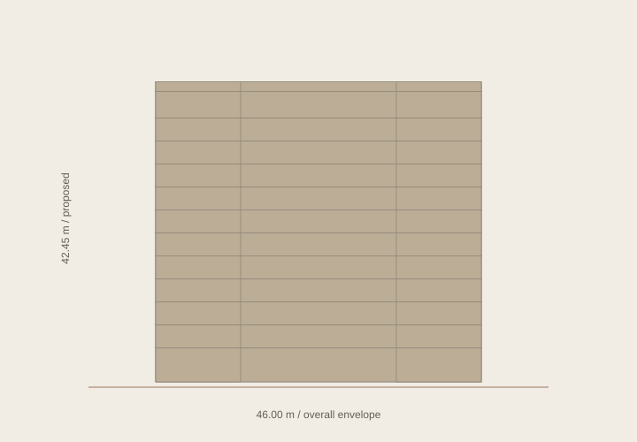
01 / FRONTCONCEPT STUDY
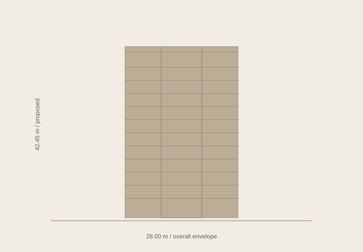
02 / SIDECONCEPT STUDY
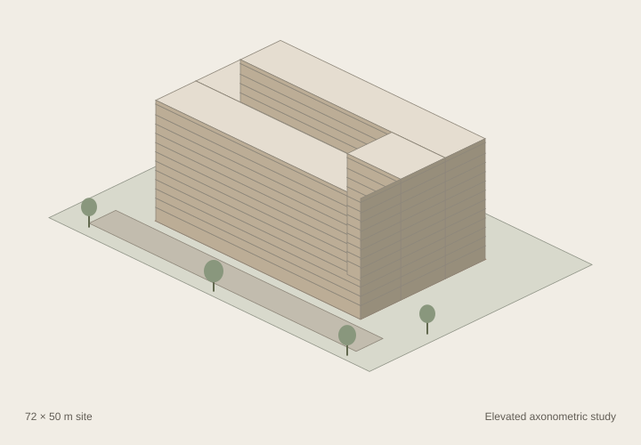
03 / AERIALCONCEPT STUDY
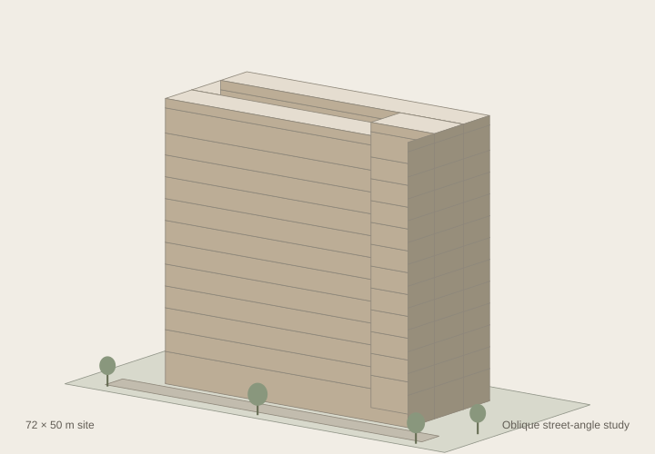
04 / STREET ANGLECONCEPT STUDY
OPTION B / RECOMMENDED
Stepped Terraces
A grounded volume that opens to the sky.
Opportunity A clear silhouette, repeated bays and a legible light study.
To resolve Upper-floor planning, drainage and privacy need development.
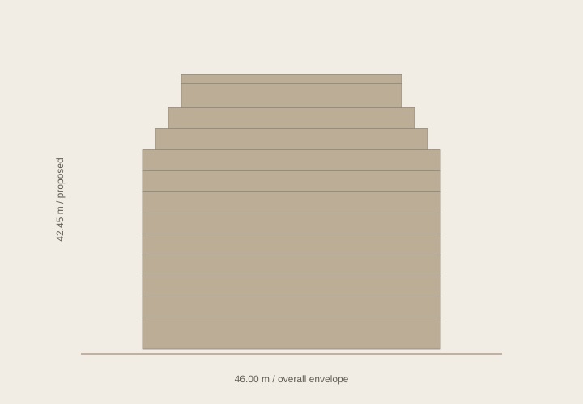
01 / FRONTCONCEPT STUDY
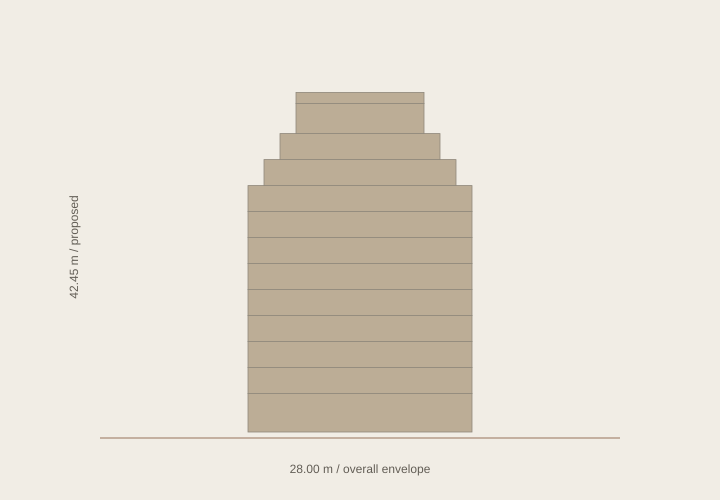
02 / SIDECONCEPT STUDY
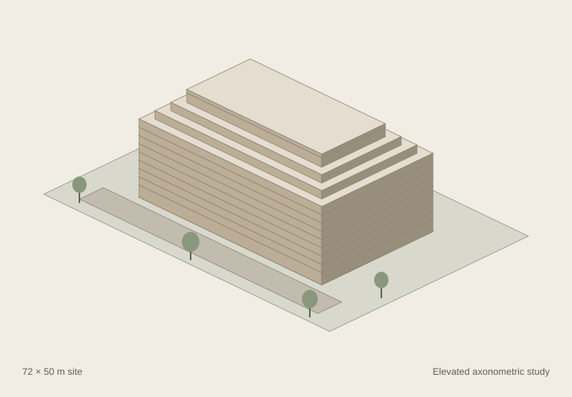
03 / AERIALCONCEPT STUDY04 / STREET ANGLECONCEPT STUDY
OPTION C
Twin Volume
Two wings, connected by a vertical space for light.
Opportunity A distinctive opening and strong depth in the façade.
To resolve More internal façade and a more complex circulation strategy.
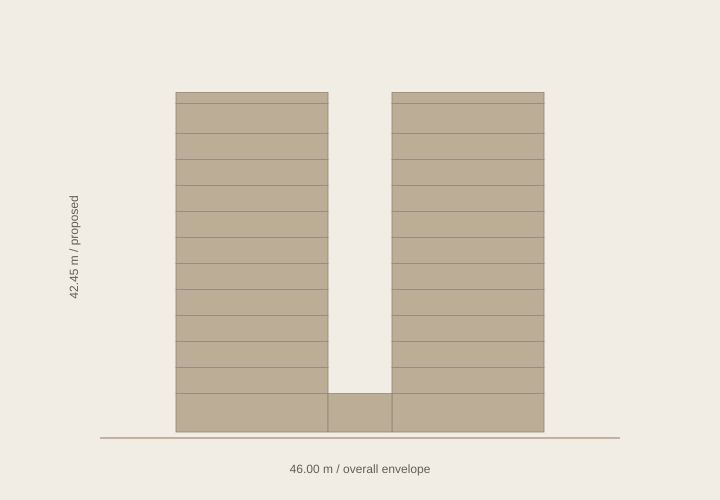
01 / FRONTCONCEPT STUDY
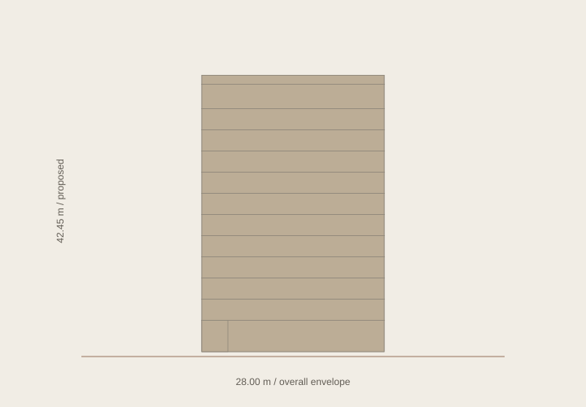
02 / SIDECONCEPT STUDY
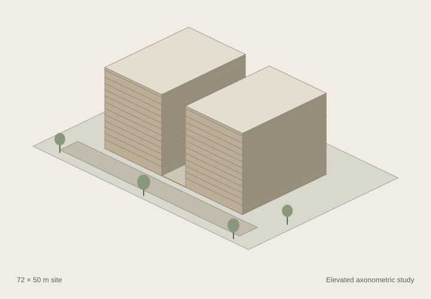
03 / AERIALCONCEPT STUDY
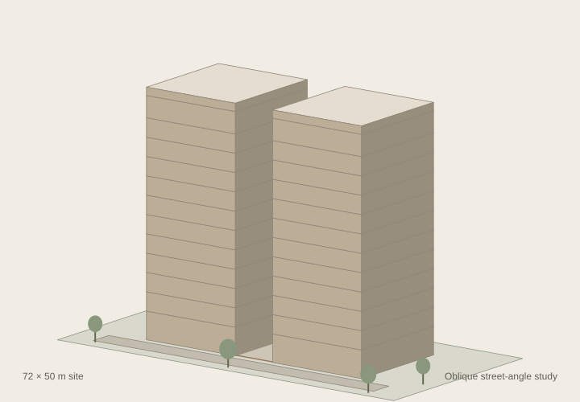
04 / STREET ANGLECONCEPT STUDY
These are volumetric diagrams, not construction drawings or photoreal renders. The street view is a schematic oblique projection. Daylight, structure, servicing and apartment plans require further design.
02 / Storyboard
From ground to evening light.
The first prototype is intentionally limited to Load, Land, Form and Light. The building remains present as the experience changes around it.
AFRAH
00 / LOAD
Preparing the view
An actual load state. Native AFRAH wordmark.
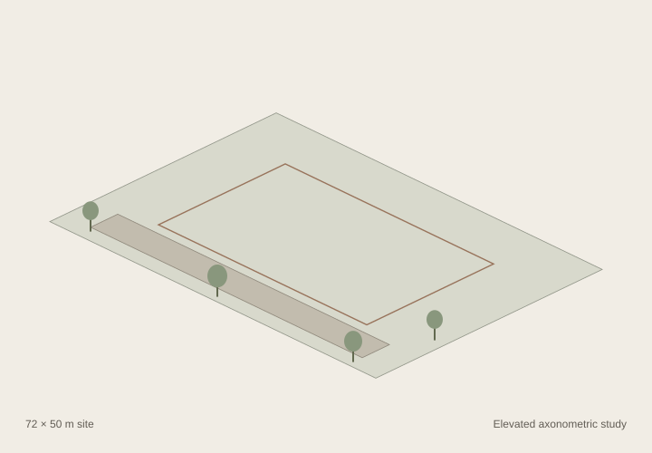
01 / LAND
A place takes shape.
Establish the ground before the building.
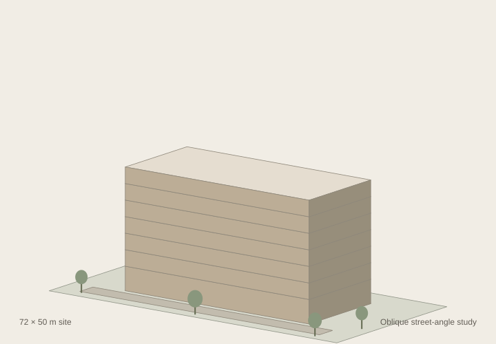
02 / FORM
A frame for living.
Reveal structure with its base held in place.
03 / FORM / HOLD
Let the form settle.
Give the completed silhouette a quiet pause.
04 / LIGHT / DAY
The hours change everything.
Hold the camera. Change the atmosphere.
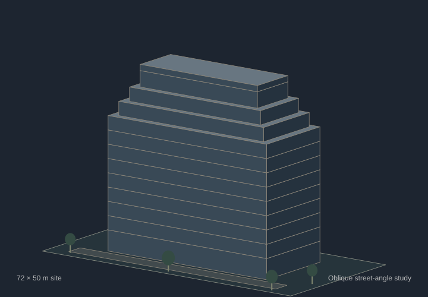
05 / LIGHT / DUSK
Stay a little longer.
The same building, with evening light.
The frames show camera intent and sequence only. Lighting, materials and construction reveals will be evaluated in the actual 3D prototype.
03 / Reference evidence
Principles to carry forward.
Public-page captures, source-linked and kept separate from Afrah's architecture. Measurement limitations are recorded rather than filled with guesses.
ERA
The opening remained on its loader. Camera behavior is unverified.
Captured at 1920, 1440, 1280, 1024, 768, 430 and 390 CSS pixels in Edge. These are reference screenshots; they are not Afrah assets or proof of physical-device performance.
04 / Working visual system
Colour follows the light.
The brief supplies the palette. Bronze stays a small accent; amber belongs to interior light. Flat surfaces and native text keep the study clear.
Afrah black #0B0B0A
Architectural ivory #F1EDE5
Stone #C8BCAA
Muted bronze #98735B
Dusk blue #1D2530
Window amber #D39050
Measured in light.
Editable typography
The existing Afrah project uses Playfair Display, Inter and Montserrat. The proposed website starts with Playfair Display and Inter; this offline study uses native Georgia and Arial fallbacks.
No title image or custom wordmark is needed to move the study forward.
05 / Production package
Decisions, made visible.
The creative and technical plans sit alongside the evidence. This package precedes website implementation and final 3D assets.
Recommendation: develop B, Stepped Terraces, into the first four-scene prototype.The prototype will test proportion, material, light, camera and performance before the remaining website is built. ERA's later motion and some Whiteley media remain unverified. No final model, production website or public deployment is claimed.